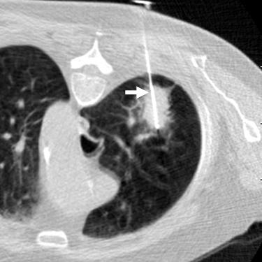

Jeffrey P. Guenette / Scientific Publications
Lung Ablation
Guenette JP, Dupuy DE in Mauro et. al., ed.
Image Guided Interventions 2/e
 Introduction:
Image-guided thermal ablation is an increasingly studied and used treatment for both cure and palliation of primary and secondary lung cancer. The technique has been used for a little over a decade and has been proven safe and effective in treating a variety of solid tumors including many in the lung, liver, kidney, breast, bone, and adrenal gland. It may be used in conjunction with radiotherapy and systemic chemotherapy and is relatively low cost. Thermal ablation modalities include radiofrequency, microwave, laser, and cryotherapy. Randomized controlled clinical trials have not yet been conducted to establish efficacy of thermal ablation
alone, in combination with, or relative to other established treatments of lung neoplasms. However, an increasing number of single and multicenter cohort studies have consistently established the safety and suggest efficacy for medically inoperable disease. The remainder of this chapter highlights the basic biophysics underlying thermal ablation modalities, specifically within the unique anatomy and physiology of the lung, the understood safety and efficacy of thermal lung ablation given our experience to date, newly
introduced advances in thermal lung ablation techniques, and the current role of thermal ablation in the treatment of lung cancer.
Return to Home Page